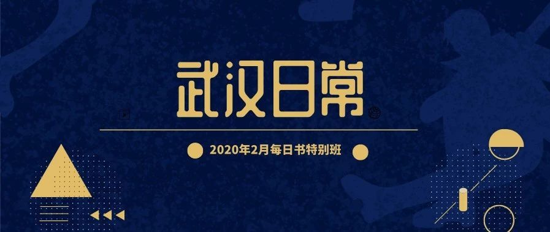
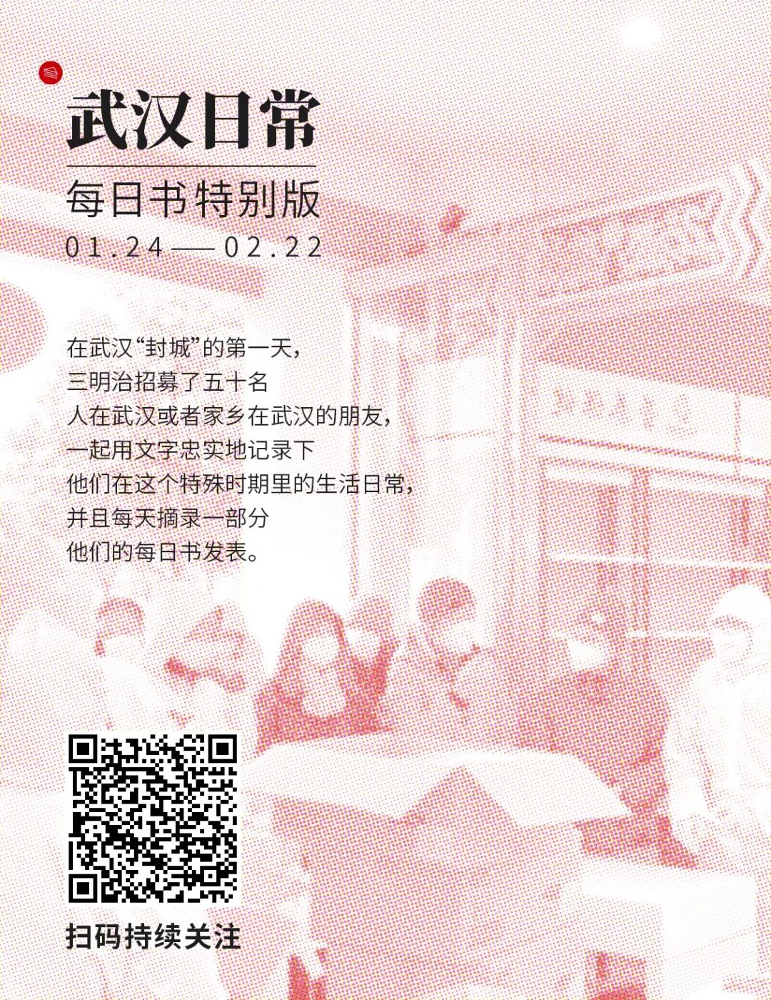

危机下的民间志愿者：把自己逼成超级对接平台
原文链接 备份链接 他觉得自己像一个巨大的电插座，身上插满了孔，求助信息和资源提供信息被一起插到他身上，他再来牵线对接。 文 | 谢婵 李叙瑾 编辑 | 小豆 22岁的梅浩宇窝在出租屋里，吃光了13包泡面和3大袋零食，每天睁开眼睛，他就开 …


Haylin是一名生活在武汉积玉桥的自由职业戏剧人。疫情爆发的这段日子，她说自己作为一个武汉人，“已经习惯了每天早上起来查有多少新增病例等等，晚上睡觉前看又有哪个医院在发求助消息的习惯”。为了出力，她参与了一个志愿者小组，但是在协助的时候感觉到无力与茫然。这种困惑是真实的。
在这样的时刻，没有人可以指责一个普通人的无力。在各类民间组织、志愿者，甚至是“饭圈”发力驰援的时候，人们对湖北省红十字会的失职所激荡起的愤怒浪潮仍未平复、对“双黄连”脱销这样的官方新闻更感滑稽。
今天武汉日常系列摘录的Haylin关于参与志愿者工作的记录，随着时间的流逝，她每天对于“帮忙”这件事情的心情也发生着变化。这段心路，是在这个疫情爆发的时段一部分真实的留存。

作者：Haylin
坐标：武汉积玉桥
职业：自由职业戏剧人
从今年的大年初一开始，我更加仔细地去关注一线物资的问题。好多家人、朋友或者朋友的亲人在一线当护士医生，却没有防护服，这些信息越来越频繁地通过各种渠道出现在我的微信里。
一开始我通过随手转发，帮着群里见过面的或者没有见过面的人搭线，后来误打误撞被拉入了一个志愿者群，协助统计物资需求。
虽然电视上一直在报道正在动用各方力量运输和生产物资，但是从医生告急的消息来看，目前物资还是非常滞后于每日所需，陆陆续续也有越来越多的县级医院在发出求救的呼声。然而民间的捐助又卡在“统一调度“的政策上，货进不来，或者不让用。另外，在采购时，容易被骗的情况也很多。
晚上，家里做社工的亲戚向妈妈发来微信说自己快要忙崩溃了。社区里要买东西的太多，他们采购跑腿跑得身心俱疲。而且现在社工也没有什么保障，他们的口罩很多都是不合格的。之前我朋友说她的社工朋友要挨家挨户地登记发热病人的情况，却一副医用口罩都没有，只有最没有防毒效果的棉布口罩。
看到身边这些做社工、做医生的朋友们，我真的很替他们担心。
刚开始，感觉自己帮到的很少很少
加入志愿者团队的头几天我都在瞎忙。说是瞎忙，是因为自己想帮忙而又好像没有实际帮上什么忙，但依旧很忙的状态。志愿者群里的消息爆满，流动特别快，每天都有看到任务说要更新医院物资需求信息，有资源了要对接医院去要，等等等等。
但一开始我没意识到，家里有老人需要帮忙照顾，自己手头也有工作的情况下，我其实很难全天投入到志愿者工作中。
前几天决定抽两三个小时帮忙的我，早上答应了要更新刚刚发过来的几个物资单文件上的信息。然而群里的人比我手快，我石墨文档还没开通就被她更新了。接下来，突然间有人要我接手做另一个跟进工作。我还没有弄清楚情况就答应了下来。十个医院的名单突然落在了我手里，交接的工作在语音留言中匆匆完成。
有4个医院还没有拉入发布物资最新供应信息的微信群，我决定从他们开始联系。每家医院都标了号，我第一位联系的柳医生，礼貌地接了我的电话，在耐心听完我的自我介绍后，她给了我她的微信号，但后来加了之后都没有被通过。于是我联系了下一家医院的徐医生。徐医生回复比较慢，所以后来又联系到了这家医院后勤部的石老师，问题问了两遍，等来等去，两个老师回报的信息也有点不一样，需要我反复核实。也有医生因为太忙了，加不上微信，我就在一旁更新备注信息。
就这样，更新一个医院的几行信息就花了一个小时。
然而这还算容易的，正在我更新医院信息时，突然群里说有一批物资到了，负责的医院里有急缺的（我们所谓的“急缺”就是指过一天两天就完全用完了的）赶紧微信联系，发一批货。然而我当时还并不那么清楚如何联系，以及联系时要发哪些消息，又错过了Deadline。
这时外婆喊我去帮忙，我意识到，我可能不适合做这个工作。
再后来，我误打误撞加入了外联部的工作，原因是我的好友搞到了一批N95口罩到杭州，在愁怎么通过物流送进湖北。我马上上报这个情况，志愿者拉了小群。无奈一阵沟通后，我的好友说因为没有三证，他们也帮不了，只能建议送到广州。今天联系的几家医院都说N95是急缺，甚至有的已经完全没有了！然而我到现在也还没有完全帮到她联系到能走通的渠道。作为一个信息中转的人，我感到深深无力。
但我们志愿者小组的大家，情绪还是很高涨的，特别是带头人。他们一直在几个群不停地更新消息回答问题，但是每次有物资来，都特别激动，让所有人冲出去问医院。现在因为缺乏一些曝光度和信任度，我们的工作还很受阻，但是我相信他们会帮到越来越多的人。
到了晚上，我找到了新的志愿者来接替我的工作。这个跟医院的工作对在手机旁边实时跟进的要求比较高，我觉得我不太合适。虽然我对自己退下来很自责，但是也许我可以找到更好的方式来帮到别人。比如，通过我的人脉联系，转发一些资源，有可能能帮到一批物资到达一批急需的医院。
最后我把今天的工作内容整理了一下，编辑了一个工作指导文件，这样以后新的、想做这件事情的人也不会像我一样摸着石头过河了。
作为一个不会治病、不会开车、没有钱的个体，我一边感到自己的渺小，一边感到做好力所能及的事情的意义。这一天我一点也不恐慌，也不难过，就是忙。妈妈看到我一直在忙志愿者的事情，也变得沉稳很多，今天开天荒地没有催我吃饭、休息眼睛或者睡觉。
我几乎变成24小时跟踪疫情的雷达
说真的，我这几天真的不想看手机了……但是作为一个武汉人，我已经习惯了每天早上起来查有多少新增病例等等，晚上睡觉前看又有哪个医院在发求助消息的习惯。
1月29日这一天我没有做志愿者，但是也不自觉地去检查医院物资需求信息汇总的表格，转发一些求助消息，把医院情况告诉给一些在做捐赠有关工作的同学。
志愿者小组的群组一不看就是几百条消息，我不知道他们到了哪一步，更不知道总体上大家是怎么运作的（不是没有指南，而是指南没看太明白）。大家又忙得没有时间来培训新人，我觉得我插了嘴也是给大家添乱。所以我把自己的行动范围变得很小，只关注跟踪我所知道的两三个人，看他们有什么需求和帮助。
微信是个强大的平台，更是一个不理想的沟通平台。线上协作的沟通效率问题，目前没有办法解决，我不知道现在该以什么方式参与到帮助中，也不想让自己变成每天一直待在电脑旁边的全职志愿者，所以我觉得非常迷茫。
这几天我看到的县城医院的告急情况越来越多，很多人担心他们没有被中央和民间捐助者顾及，同时，我也看到越来越多的求助是关于有肺炎感染但没地方收，除了转发、进一步跟进，我没有办法知道消息最后到了哪里，有没有帮到谁。越来越多的人开始担心消息来源的准确性，但是我只能想，转发总比不转发好。
如果我每天只能三个小时的精力当志愿者，或者帮助外面的人来对抗疫情，我可以做什么？
但自从“封城”消息发出后，我就变成了几乎24小时跟踪疫情的雷达。每天早上醒来，眼一睁开，就看手机上面有多少新确诊。每天白天，我都在各种转消息、转求助，尝试让需要帮助的人找到可以帮助的人，或者转科普，问问题，发破谣言的信息。
每天晚上睡觉，都是家里人喊着，别熬夜了，我自己却在说：“我做得事情很重要，现在物资很紧缺，我得跟金主爸爸对接一下我认识的某某某。”
说实话，对新型冠状病毒本身的恐慌，大概只持续了2-3天，随着网上的信息的普及，我看到的更多的是医生面对大量病人精神上几近崩溃的困境。一开始挨家挨户登记高热病人却连能防病毒的防护口罩都没有的社工的困境，孤寡老人没人照顾的困境，没有足够防护的环卫工人的困境，一家人都感染了不知道谁来照顾的困境，医院拿不到物资的困境，华人在国外大规模被歧视的困境，采购物资的捐赠者找不到货源，找到了却货源坐地起价的困境，红十字会不透明很多人想捐不敢捐的困境……
面对所有这些，我甚至都没有什么时间生气，除了偶尔骂两句，我大多数时间都是想着“我能帮到谁就好”。所以本来很少看手机的我，现在天天转消息。但是我又很清楚投入一个志愿者团队或者当一个志愿者意味着要付出全部的生活。因此片段式地帮忙，其实让我最后觉得很空虚。
不知道为什么这种感觉会涌上来，洗澡的时候，以为一天已经结束的时候，我感到深深的空虚。
我觉得自己好像没有权利
去过自己的生活
1月的最后一天，其实我已经下决心4个小时不碰手机。因为眼睛已经很不舒服了。这段时间是下午3点到晚上7点。
没有手机的四个小时过去后，这场疫情的印象好像突然在我生活中淡去，变成虚幻。我才意识到自己有多么想延长这四小时，过很简单的生活，退出新加的很多物资群、人脉群，再也不被那个屏幕后的世界吸走。
但是又有谁能做到呢？这个屏幕后的世界就是真实的世界。
早上看到红十字会分配给一所非定点莆田系医院1.8万口罩，给协和只有3000的人，怎么可以放下手机？最近我联系到英国的一批捐赠者，我隐约了解到他们在愁到底怎样才能把物资不被截拦地运到武汉想捐的医院。我再三向对方推荐志愿者团队所验证过且物流经验比较齐全的全英学联，但也许是信任度问题，他们也没有进一步在物流上和对方进一步沟通。一边是看着表格里的医院各个告急，一边是远在英国的物资迟迟不敢寄，一边是志愿者团队的领头人发出“我发烧了，今天退居二线”的群消息，另一边是金主爸爸们不知道该相信谁，还因为各方的信息忙得没时间搭理的现状。物资运输的每一环都需要信任，而这种信任已经在各种丑闻和作祟的个人中被破坏了。
前天，有一个伦敦华人记者采访我，问我自己现在觉得最有成就感的一次信息转发和帮忙是什么。我说，大概就是有一次，发了一个物流求助消息给一个朋友，然后她转发到另外一个她所在的群里之后向我回复说“解决了”。
能看到一件事情有个好的结果，所以很释然吧。但是成就感，是真的没有多少。
求助的信息，带着一丝背后的无力感，从一个群流到另一个你不知道的群，没有头，没有尾，有时我觉得自己什么也没有做到，更多时候我觉得，做了总比没做好。
采访我的记者简单地了解了我的生活情况，最后她说，我觉得你也需要照顾好自己，从我的角度看来，你的生活已经很不平衡了。
我回答”可是我会觉得我很自责和自私”我觉得自己好像没有权利去过自己的生活，而不去帮别人。但是我又没有真的像志愿者们那样每天在电脑前从早到晚地跟，所以好像连说这个话的资格也没有。
其实我的身体已经开始有点抗议了。这一两天每天晚上我的腹部都会很疼。然而，我还是觉得现在没有什么资格去照顾自己。因为全世界好像突然出现很多问题，然后好多人都在做比我多的事情去解决它们。
碎片化的信息时代，把这个世界和我都生活都切成了碎片。而在这碎片洪流之中，我也感到自己散成了碎片。这种贯彻生活的空虚，这种无力，我不知道是不是一种创伤。但是我想，这应该也是很多很多人都在深深地感受到的吧。它关乎这次疫情暴露出来的种种社会问题，笼统地哲学式的感慨也没有意义。
如果有人看到这篇，我只能说希望你不要被这里的负能量所传染，我自己还可以消化。
写完上面几段，我把自己关在房间里哭了一会儿。然后我对自己说：要看到生活中阳光的一面，要看到一个完整的世界。不管是什么样的心情，都是可以接受的，都是人生的一部分。
整理完自己的情绪，我照例拿起我的手机转发消息，开始碎片式的“志愿”，在互转消息的过程中，我的朋友说那批落到杭州的N95口罩靠顺丰一两天就飞到了她想要送的武汉周边医院。而另一边，志愿者的医院物资对接群里，医生们也越来越多地发消息、要物资。希望还是崩溃？不管怎样，我越来越深地感到：物资哪里找，物流怎么通，我所知的不一定比别人所知的更多，我所认识的人，不一定别人没有找过。也许千千万万的人这几日和各方“斗智斗勇”所学到的东西，远远比我学到的多得多，所建立的联系，远远比我所有的联系有用。
这种感受，使得我比较安心地，度过了一些为自己而过的时间。
如果此刻正在阅读这篇文章的你，有什么可以帮助志愿者们提高效率的平台或方式，欢迎留言分享。

关注公众号三明治，点击菜单栏“武汉日常”
可找到“武汉日常”全部文章
💬
本文来自每日书武汉日常班，50名作者正在和我们一起每日记录。
在武汉“封城”第一天，三明治招募了50名人在武汉和家乡在武汉的朋友，一起来用文字忠实记录他们在这个特殊时期的生活日常，并且每天摘录一部分他们的每日书发表。作为大疫情之下的真实片段，为时代留下一点普通人的痕迹。


《“冒昧问一句，你这次回国没去过武汉吧？” | 美国南部的“肺炎”日记》


原文链接 备份链接 他觉得自己像一个巨大的电插座，身上插满了孔，求助信息和资源提供信息被一起插到他身上，他再来牵线对接。 文 | 谢婵 李叙瑾 编辑 | 小豆 22岁的梅浩宇窝在出租屋里，吃光了13包泡面和3大袋零食，每天睁开眼睛，他就开 …
原文链接 备份链接 关注并星标消费新声 不错过泛消费任何最新动态 从这个物资对接平台的建立、运作中，我们看到互助的力量。 作者 | 赵烨楠 编辑 | 罗立璇 1月24日，中国春节的大年三十、武汉“封城”的第二天。 在大量患者涌向医院的情况 …
原文链接 备份链接 “追踪一个人捐赠的物资是真的是没有时间去做的，因为每天捐赠的人太多了” \ 思思，武汉红十字会临时志愿者，话务组 \ 中国红十字会截至 1 月 25 日，累计接受爱心捐赠达 3.4 亿元，接受捐 …
原文链接 备份链接 武汉封城后的逆行者 空荡荡的武汉城区。自1月23日10时起，武汉全市关闭公共交通。本刊记者/黄孝光 摄（下同） 1月23日，武汉封城，此时，护士梅伊和胡云云成了逆行者。 她们是大学同学，毕业后分别去了武汉华润武钢总医院 …
原文链接 备份链接 记者/杨宝璐 编辑/宋建华 武汉市红十字会的志愿者们 在疫情中心武汉，街头空空荡荡，但仍不断有志愿者穿梭在物资仓库、医院、高速路口运送防护物资。物资源源不断地运送进来，但1月31日，越来越多呈现在人们眼前的，却是武汉若 …